A route through the gallery
Not sure where to start? Find your rooms
A short set of questions that hands you a route: six rooms, in the order to visit them, starting with the one that will meet you where you are.
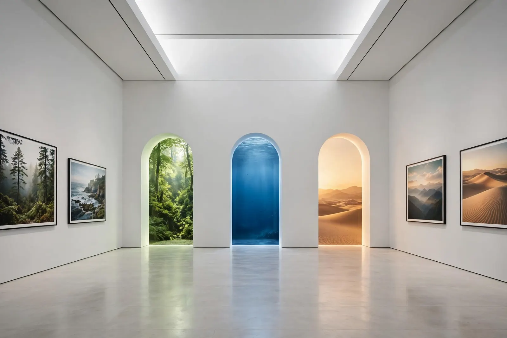
Litmus Labs · Founded November 18, 2026
Litmus Labs is a white cube gallery you walk into, not a website you scroll past. One calm central hall. Nine thresholds. Every threshold is a portal into a different world, built to let a visitor feel what a fact alone cannot teach.
Concept visual: the Litmus Labs hub. One calm white cube, portals of light, a different world behind each arch. This is the room every visit starts in.
The idea
Most teaching about disability, neurodiversity, chronic conditions, and the small living world happens in words: a talk, a slide, a policy. Words describe. A world demonstrates. In Litmus Labs a visitor does not read that a space was not built for them. They stand in it, and the space shows them.
The architecture stays constant so the lesson can change. You always enter through the same white cube hub: bright, quiet, minimal, the fine art gallery language Matthew already works in. The wings and sub galleries hang off that hub. Crossing a threshold changes everything at once: light, sound, scale, pace, physics, and what the room expects from your body and your senses.
Each wing teaches one thing well, and each one is built to be left. A visitor exits with a clearer eye, and where the wing connects to Matthew’s advising and training work, with a named next step they can actually take back to their own building, team, or gallery.
A single white cube gallery that every visitor enters first. Calm by design, so contrast does the teaching.
Art, Chronic Conditions, Innovation, Conservation, Corporate Cube World, and Accessible Voting stand on their own, and Matthew’s Life stands on its own as the documented record. Accessibility is a parent wing holding two more: Disability, and Neurodiversity with Sensory Overload inside it.
The Neurodiversity wing is Project 01: sensory overload over time inside the white cube itself.
A paired SOP Council and Roundtable Council govern every world before a single room is built. See Councils & SOPs.
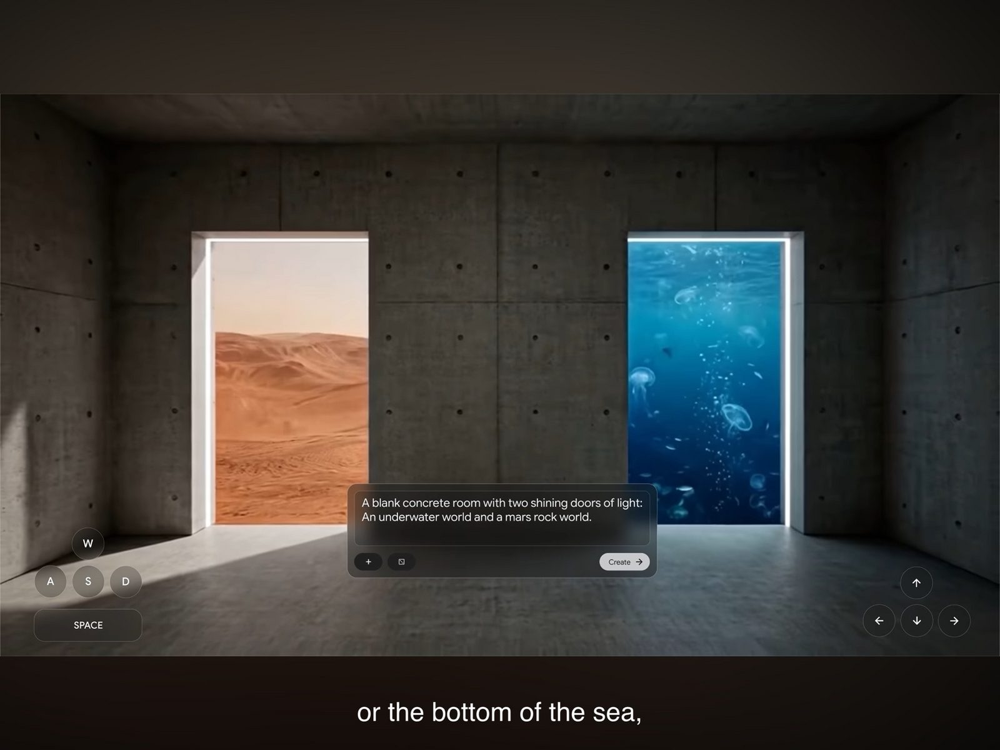
A route through the gallery
A short set of questions that hands you a route: six rooms, in the order to visit them, starting with the one that will meet you where you are.
The zones
The whole lab on one page, zone by zone. A zone is one of the nine wings off the white cube hub, shown here the way you will meet it: its representative visual at full bleed, its premise in plain words, every collection it holds, two rooms to start in, and one clear door in. Walk the zones below, or open the Zones index to filter all nine at once.
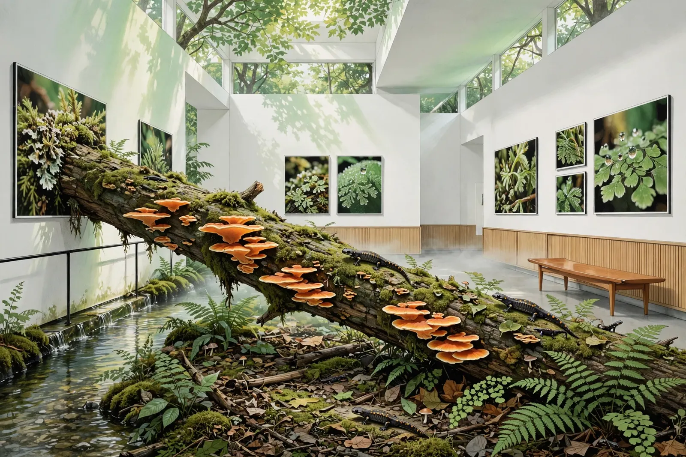
Zone 1 · Wing 1 · Art
Inspired by the book The Salamander Room: a bedroom that keeps opening into a living forest floor, built at gallery scale. Overlooked and underserved species, salamanders, fungi, and the understory, at a scale where you cannot walk past them, ending in the Sanctuary the whole lab borrows its calm from.
Concept visual: the Salamander Room, this zone’s representative room. One giant fallen tree, large glowing orange shelf fungi, salamanders at natural scale. Concept illustration, not a photograph of a real venue.
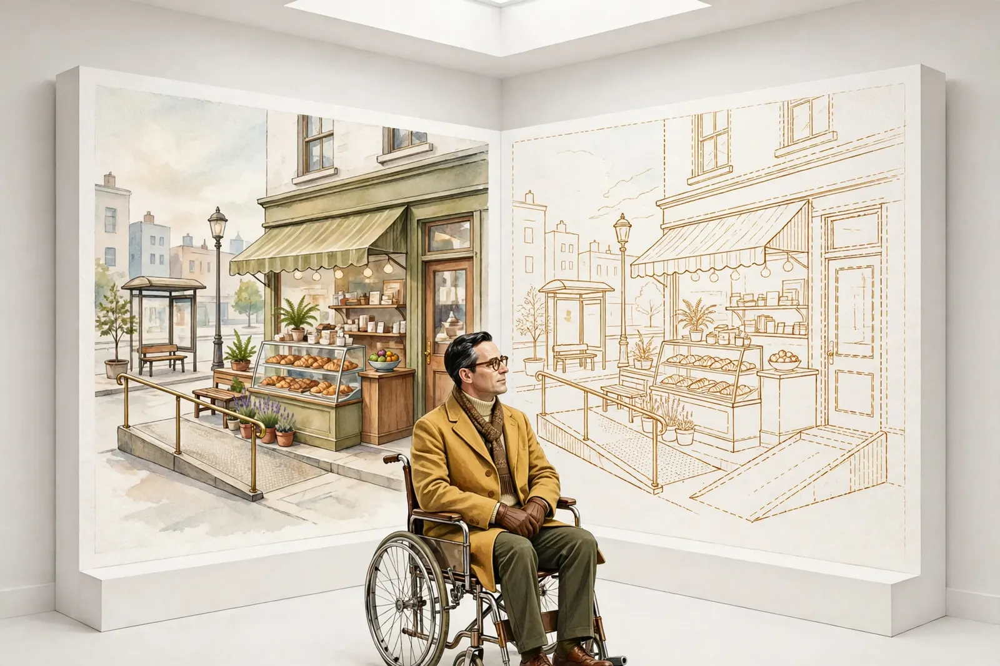
Zone 2 · Wing 2 · Accessibility / Disability
An ordinary day of errands in a built environment that keeps saying no: the hidden route in, the step that ends the trip, the door that fights back, the honest cost counter. No inspiration framing, no pity, and a final room that shows how easily it could have said yes.
Concept visual: the Disability zone at wheelchair height, amber outlines marking where the design quietly fails.
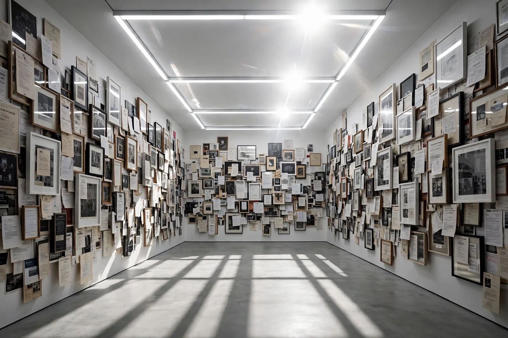
Zone 3 · Wing 3 · Accessibility / Neurodiversity
Eleven rooms, one for each kind of too much: conversation, noise, workload, light, color, crowding, time, and the quiet internal channels, arranged around the Regulation Room, where every dial is handed back. Overload here is never one loud moment. It accumulates over time, the way it does in a real day.
Concept visual: the Sensory Overload gallery at full load, walls crowded floor to ceiling under harsh light.
Project 01: the first build of Litmus Labs.
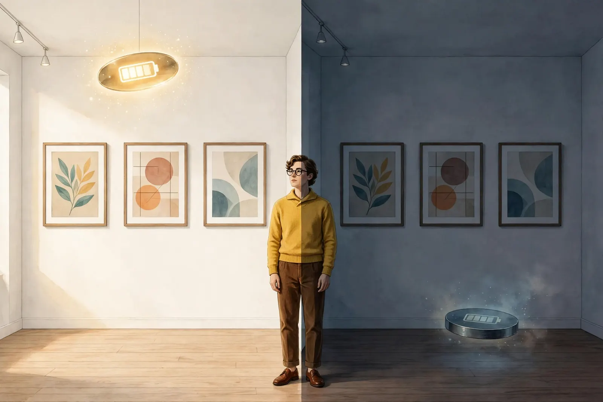
Zone 4 · Wing 4 · Health
The same gallery, visited twice: once on a good day, once on a bad one. The art does not change. The world does, and nobody else in the room can see why. Energy runs as a visible budget, mornings refuse to be predicted, and rest is defended as a room of its own.
Concept visual: one gallery, two body days, full battery on one side and low on the other.
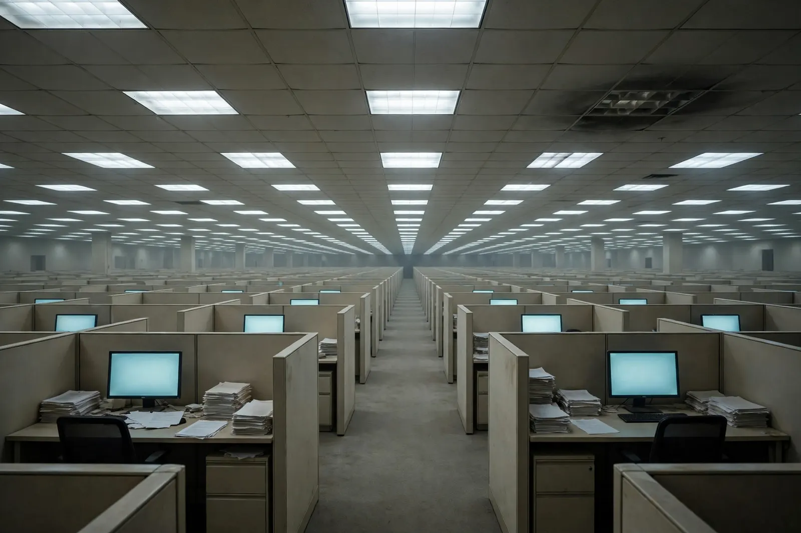
Zone 5 · Wing 5 · Advising
The backrooms meets corporate: an endless cube farm where the fluorescence buzzes and flickers, notifications stack, and sensory inputs accumulate across a workday until overload is not a risk, it is the schedule. It also lives inside the Workload Overload Room, with its own door here for leaders who need it directly.
Concept visual: the cube farm at mid workday, fluorescent rows to a vanishing point.
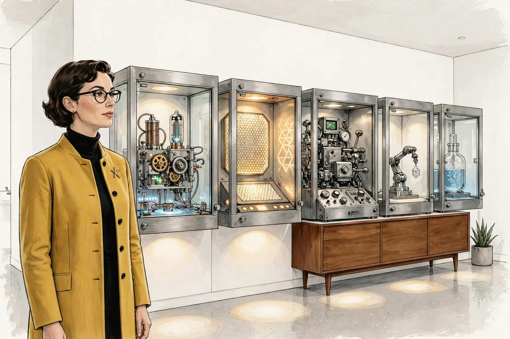
Zone 6 · Wing 6 · Innovation
The wing built like a product showroom from a film: innovations exhibited as test chambers you step into and try by hand, demonstrated live instead of described. Tactile Health is read by hand, and the CyberDeck’s portal jumps straight back to the Save Herbaria Room in Art, because tools and specimens are one story.
Concept visual: the showroom spine, one working invention per glass chamber.
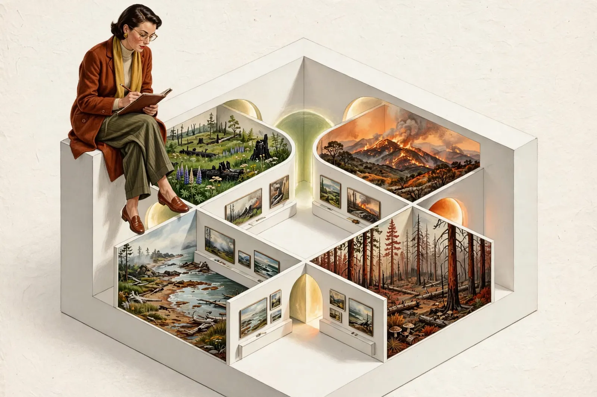
Zone 7 · Wing 7 · Conservation
Disturbance is not the end of an ecosystem’s story. It is often the middle. Fire ecology, wildfire, bark beetles in Rocky Mountain National Park, and red tide in Florida, four landscape rooms connected wall to wall by portals, and staged across dawn, midday, dusk, and night, because the field never holds one light.
Concept visual: the Disturbance Ring. Concept illustration of the gallery rooms; the field photography these rooms carry is Matthew’s own.
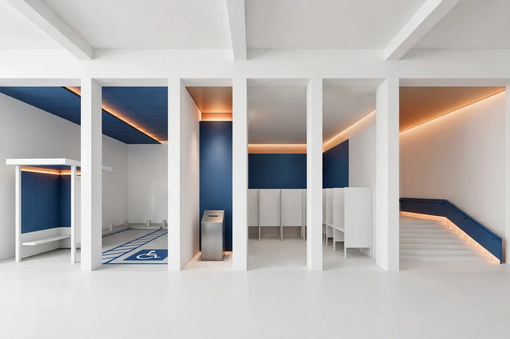
Zone 8 · Wing 8 · Civic · Accessibility
One vote, walked end to end: the bus stop, the parking lot, the drop box, the polling place, the notices inside it, and the Capitol steps where being heard is decided. Every room shows the bad example and the good example side by side, and hands the voter the plain words to ask for the good one. Two rooms are grounded in Matthew’s own Election Day at Club Tico in Fort Collins.
Concept visual: the vote in five bays, every barrier named and every fix shown.
Reserved frame
This zone holds Matthew’s documented record, so no concept visual stands in for it. Its frames stay reserved until his own photographs are installed, credited.
Zone 9 · Wing 9 · The Documented Record
The resume space: Matthew’s documented record, walked as rooms. The solo exhibitions, the speaking and workshop record, the expeditions and assignments, and the recognition on the record, hung proof-first, with credentials as information second. Inside it, the scenarios where Matthew was bullied, emotionally abused, and otherwise stand as held places, empty until he supplies them himself.
The portal wall
These are the nine thresholds off the hub. The hierarchy matters: Accessibility is the parent of the Disability and Neurodiversity wings, Sensory Overload lives inside Neurodiversity, and Corporate Cube World also lives inside the Workload Overload Room, keeping its own door here for leaders who need it directly. Select any door to open that wing’s sub gallery page.
A showroom, not a floor plan
Litmus Labs is a digital showroom: an innovation gallery exhibition in the spirit of the great fictional showrooms, the test chamber films and games like Portal 2, where every concept is presented as an exhibit you step into and the building itself is part of the demonstration. Each idea here gets its own room, inside a collection, inside a wing.
But the rooms are not laid out like a museum corridor, and they do not need to be next to each other to be connected. Portals are cut through walls between rooms that belong together in meaning, wherever they sit in the building. The CyberDeck in Innovation portals straight back to the Save Herbaria Room in Art, because a tool for reading specimens and the specimens themselves are one story. The Conservation rooms portal wall to wall among fire, wildfire, bark beetle, and red tide, because in the field they are one connected disturbance story. And the Sensory Sanctuary in Art portals directly into Corporate Cube World, on purpose: walk out of the calmest room in the building into the loudest, and the contrast teaches in one step what a chapter could not.
So there are two ways to visit. Walk wing by wing, the way the site navigation lays it out. Or travel by portal, following ideas as they link, room to room, across the whole lab. Every room page and every Build Notes entry names its portals, so the web of connections is always visible and always walkable.
How a world gets built here
The Genie video showed a prompt becoming a place in seconds. Litmus Labs keeps that speed for drafting, then slows down where it matters: lived experience review, sensory safety, and a teaching point that survives the visit.
One teaching point per wing, named before any visuals. If it cannot be said in one sentence, the wing is not ready.
A written world prompt, in the Genie style, becomes the first draft of the space. Photo references set the brand world.
Walk the draft. Note where the lesson lands, where it drags, and where it accidentally harms.
Light, sound, crowd, motion, and information are dials, not decorations. Tune them until the feeling matches the teaching.
Every exit hands the visitor one concrete takeaway: a checklist, a scorecard, or a single change to make on Monday.
In the Genie video, one product photo generated a whole pop-up store in that product’s shapes and colors. Litmus Labs uses the same move with intent: Matthew’s macro photograph of a salamander does not just hang in the Art wing. It seeds the room around it, its scale, its moisture, its quiet.
The reference still on this page is the eyewear store from that video, the clearest demo of an image becoming an environment.
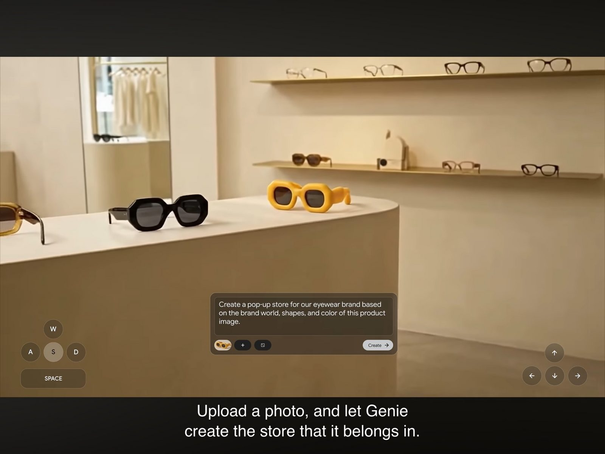
Stepping through the Mars door, the prompt box stays with you. That detail matters here: in Litmus Labs the visitor is never locked inside an experience. Controls, exits, and a calm way back to the hub stay visible in every wing, including at peak overload. Especially at peak overload.
That is the difference between a simulation of overwhelm and a teaching tool about it: the person inside keeps agency the whole time.
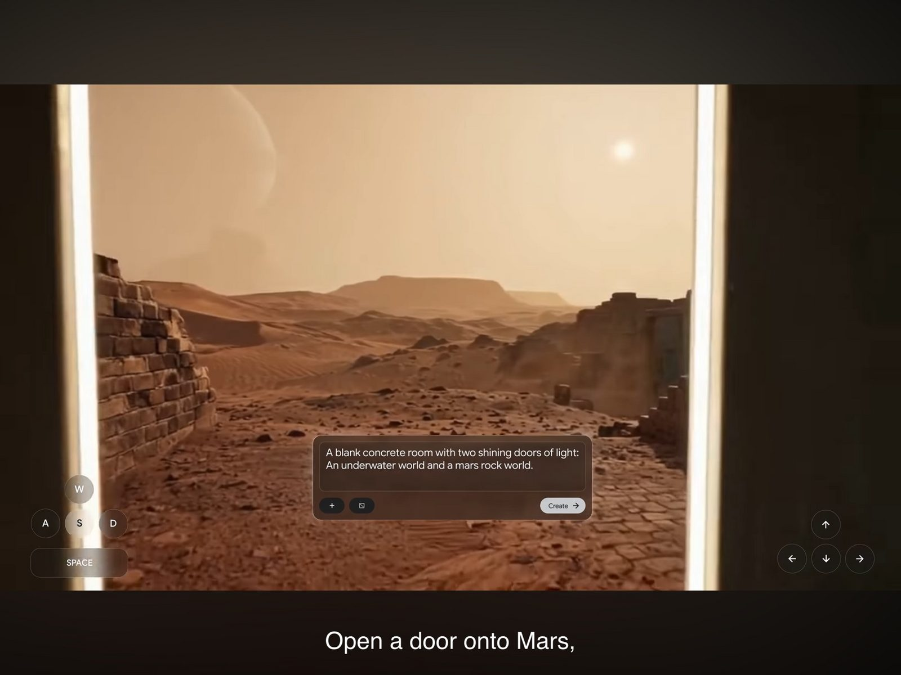
House rules for every wing
Every wing states what it will do to your senses before you cross the threshold, in plain language. Intensity is always opt in, always reversible, and the exit is never hidden for effect.
No wing ships on research alone. People who live the condition the wing teaches review the build, and their corrections outrank polish. Nothing about us, built without us.
Each wing is written twice: a precise expert pass for decision makers and professionals, and a plain language public pass. The facts never change between them. Only the words do.
Every wing contains a regulation space: low light, low sound, a seat, and no demands. Recovery is part of the curriculum, not an escape hatch from it.
These are fine art spaces first. Matthew’s photography and the white cube standard set the bar; the technology serves the work, never the other way around.
If a moment is memorable but teaches nothing, it gets cut. If it teaches but cannot be made safe, it gets redesigned. Spectacle is the easiest thing to build and the first thing reviewed.
Parking Lot
Ideas from Matthew’s Ioana call on November 24, 2026, set down here exactly as parked items. They are not built out, and they stay parked until Matthew provides the fuller details. Nothing in this section is a build brief.
The Great Hall analogy: in Ready Player One, he goes to the Great Hall to talk to the curator, the robot figure there. That is how leaders and everyday people will go to Matthew’s virtual environment: to talk to different spaces and issues, and to first-hand frictions.
A new metaphor and a new Matthewism, coined November 24, 2026. A Simulated Scenario is a scenario run inside the Litmus Labs virtual environment. A Chaos Cascade is part of it: what can happen when one thing goes wrong and cascades. Matthew’s examples: one person gets sick on a cruise ship and that person is a manager or an employee; microaggressions; inaccessibility.
For leadership visiting the user journey of this virtual space: a leader is shown the past, the present, and the future, the way A Christmas Carol shows them.
Two parked exhibits for the Art area: a memory exhibit for the dementia idea, and a hearing exhibit for the “say the word dog” idea.
Parked November 24, 2026, after the Ioana call. Details to come from Matthew.
The Wings
Litmus Labs is a digital showroom: an innovation gallery exhibition with nine wings off one white cube hub. The path runs Hub, then Wing, then Collection, then Room, and portals jump across that order wherever ideas connect. Filter by the kind of teaching, or open a wing directly.
The Art wing. A bedroom sanctuary that keeps opening into a living forest floor, in the spirit of the book The Salamander Room: moss, lichen, fungi, salamanders, and the small lives most people walk past, rebuilt at a scale where you cannot walk past them.
The Accessibility wing, first door. Ordinary errands in a body the built world did not plan for, including the situations venues claim are accessible and are not, plus a dedicated life and fire safety sub wing.
The Accessibility wing, second door, and the first world Litmus Labs will build. Inside it, Sensory Overload is a wing of its own with eleven sub rooms, one per kind of too much: conversation, noise, workload, home stress, time, light, color, crowding, and more.
A wing about energy as a budget and days that will not hold still. The same gallery, visited twice: once on a good day, once on a bad one. Same art on the walls. A completely different world, and nobody else in the room can see why.
The backrooms meets corporate: an endless cube farm where fluorescence buzzes and flickers, notifications stack, and sensory inputs accumulate across a workday until overload is the only honest outcome. Enter it from the hub, or from inside the Neurodiversity wing, where it also lives as a sub gallery.
Litmus Labs is a digital showroom, and this is the wing that says so out loud: innovations exhibited as test chambers you step into. Tactile Health, and the CyberDeck, a hands on deck of tools whose portal jumps straight back to the Save Herbaria Room in Art, because tools and specimens belong to the same story.
Fire ecology and wildfire, bark beetles in Rocky Mountain National Park, and red tide in Florida. Four rooms connected wall to wall by portals, because in the field they are one connected story about disturbance, response, and what returns.
A civic wing with a dual purpose: voter accessibility and voter empowerment. Six rooms walk one vote end to end, from the bus stop to the Capitol steps. Every room shows a bad example and a good example of the same scene, names what can go wrong and who or what makes it go wrong, and hands the voter plain language for what they can do, ask for, and report. Two rooms are grounded in Matthew’s own documented Election Day experience at Club Tico in Fort Collins.
The resume wing. Matthew’s documented record, walked as rooms. The solo exhibitions, the speaking and workshop record, the expeditions and assignments, and the recognition on his record, hung proof-first, with credentials as information second. Inside it, the scenarios where he was bullied, emotionally abused, and otherwise stand as held places, empty until he supplies them, with everyone in them depersonalized and anonymized.
The room every visit starts and ends in: white walls, Matthew’s photographs, low sound, clear sightlines, a seat that is actually comfortable. The hub is the control condition for the whole lab. When a wing overwhelms you, the hub is how you remember what calm feels like, and that contrast is the lesson.
Wing 1 · Art · Concept stage
Inspired by the book The Salamander Room. A child brings the forest inside, piece by piece, until the bedroom is the forest. This wing builds that room at gallery scale: a sanctuary that keeps opening into a living forest floor ecosystem.
Concept visual: the Salamander Room. Not a giant salamander: a giant fallen tree, large glowing orange fungi, moss and lichen, a stream edge, and salamanders at the size they actually are, living in the ecosystem the room builds around them.
Most people will never notice a salamander, an aphid, or the mummies aphids leave behind. They are too small, too quiet, and too easy to step over. Conservation follows attention, and attention follows scale. So this wing changes the scale.
You enter at human height. By the second room, you are the small thing. The Salamander Room is not a salamander exhibit. It is a bedroom, built after the beloved book of the same name, where a child asks what a salamander needs and then keeps bringing the forest inside to answer: moss and lichen first, then fungi and the decomposers, then the forest floor level and benthic organisms, and yes, salamanders among them, until the room is no longer a room with nature in it. The room is the ecosystem.
Unlike the overload wings, this one regulates. Low sound, slow movement, moisture in the air, green light filtered like canopy. It is the lab’s proof that a virtual world can lower a heart rate on purpose, and the sanctuary standard the other wings borrow their calm rooms from.
Room 1
The doorway shrinks the visitor, not the art. Wall text sets the rule: everything from here is shown at the size it deserves.
Room 2
After the book: a child’s bedroom that keeps opening into a living forest floor. Moss, lichen, fungi and decomposers, forest floor and benthic organisms, and salamanders living among them, at a pace set by the ecosystem, not the exhibit.
Room 3
The macro meadow: aphids, mummies, predators and prey in one square meter of real ecology, told as a story instead of a specimen case.
Room 7
The underserved room: funding, research, and protection gaps for small species, shown plainly next to the beauty that makes the gap hard to defend.
Room 8
Sit down. The wing ends quiet, with one photograph, one bench, and the exit takeaway: one small species near you, and one way to notice it this week.
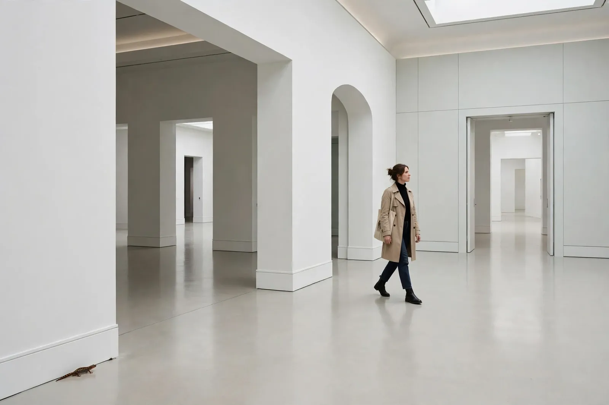
The starting state
Most people will never notice a salamander. It is too small, too quiet, and too easy to step over, and conservation attention flows to what people can see. The wing's problem is not cruelty. It is scale.
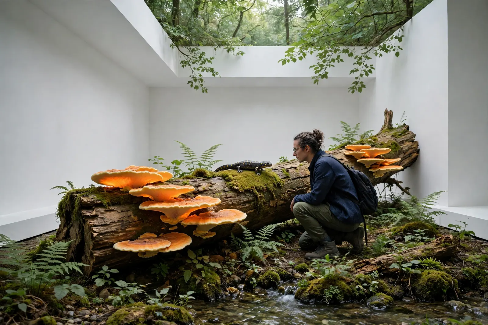
The designed state
So the wing changes the scale. The visitor shrinks, the forest floor rises to meet them, and the overlooked world becomes the largest thing in the room. What a visitor leaves with is a new default size for what counts.
The felt sense that small is not the same as insignificant, carried in the body, not just the notes.
Every exit names a real overlooked species from the visitor’s own region, so the wing continues outside the headset and browser.
For venue and gallery partners: a worked example of a low sensory art space that loses nothing by being calm.
A white cube gallery that becomes a child’s bedroom opening into a living forest floor, inspired by the book The Salamander Room: a bed and a reading chair at one end, then moss, lichen, fungi and decomposers spreading across the floor, a shallow clear stream edge with benthic organisms, salamanders resting under ferns, Matthew Cicanese’s macro photographs at mural scale like windows, soft green canopy light, near silence, slow drifting mist.
Wing 2 · Accessibility / Disability · Concept stage
No inspiration framing, no pity. Just an ordinary day of errands in a built environment that keeps saying no, and a final room that shows how easily it could have said yes.
Concept visual: the Disability wing. An ordinary morning, rendered honestly, with the failures outlined where they hide.
Accessibility training usually hands leaders a checklist. Checklists get filed. This wing hands them a morning: get to the appointment, get into the building, use the room, get home. At each step the world adds friction that a nondisabled visitor has never had to spend, measured in the currencies disabled people actually pay: time, energy, dignity, and the number of times you have to explain yourself to a stranger.
The wing is built peer to peer, from lived experience, and reviewed by disabled visitors before it is shown to anyone else. The visitor perspective is adjustable: wheelchair height, low vision, limited grip and stamina, and a screen reader first path through the same rooms, because a world about access that is not itself accessible teaches the wrong lesson by accident.
For Matthew’s advising work, this is the front door with the widest honest reach: every facilities lead, venue manager, and executive who walks it exits into a concrete conversation about their own building.
A series of common situations people find themselves in that carry an accessible label and fail in practice. Each situation is its own sub room. Select any room to open its page. The series starts with the five below.
Room 1
The accessible entrance that is technically present and practically hidden: around the back, past the bins, up the ramp that ends at a locked door.
Room 2
One step. That is the whole room. Everything you came for is visible through the glass, twelve inches above the only wheel that can reach it.
Room 3
Heavy doors, high counters, a form that assumes two free hands and twenty twenty vision, and a queue that will not wait while you manage all three.
Room 4
The day, totaled honestly: extra minutes, extra energy, extra explanations, next to the same day run by a visitor the building was designed for.
Room 5
The same errand, rebuilt right. Step free, light doors, seated height service, clear signage. Nothing futuristic. Every fix in this room already exists and is already required.
The part of accessibility that stops being about convenience and starts being about survival. Most evacuation plans quietly assume a body that can hear the alarm, see the signage, and take the stairs. This sub wing walks the plan as written, then as lived. Select any room to open its page.
The wing also teaches by kind, not only by situation. Digital, physical, and communication inaccessibility each get a room of their own, so a visitor can isolate the layer where a design failed. Select any room to open its page.
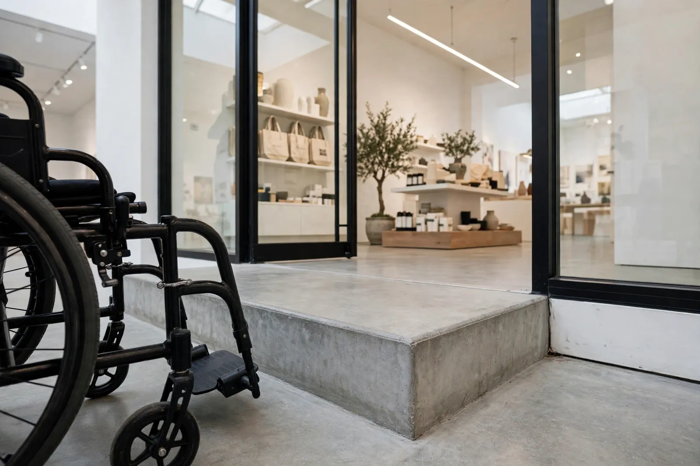
The problem
An ordinary errand in a world not built for you is a sequence of small negotiations, any one of which can end the trip: a step, a route, a door, a counter. Each is minor to the building and total to the person it stops.
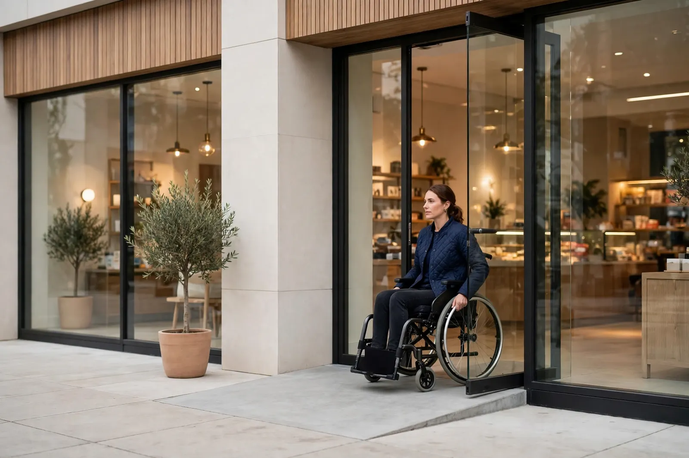
The solution
The wing always ends in the rebuilt version: the same storefront, the same errand, the barrier removed at the layer where it lived. The distance between the two images is the whole argument, and it is usually about four inches of concrete.
The exit generates a short inventory of the exact barriers the visitor met, written in the language of their own building audit.
Time and energy deltas from their own run through the wing, not a statistic about other people.
A single barrier from Room 5 matched to their venue, with the advising path to get it fixed. The wing ends at the FRICTION door, once, clearly.
A bright white cube gallery that becomes an ordinary city morning at wheelchair eye height: a back alley accessible entrance past dumpsters, one single step in front of a glass storefront, a heavy spring door, a high service counter, then the same rooms rebuilt step free and calm, same daylight, same art on the walls.
Accessibility / Neurodiversity / Sensory Overload · Wing 3 · Project 01, first build
Inside this wing sits Sensory Overload: eleven sub rooms, one for each kind of too much, arranged around the white cube where the first build happens. Overload here is never a single loud moment. It accumulates, over time, the way it does in a real day.
Concept visual: the white cube at peak information load. Same room as the calm hub. Nothing about the architecture changed except how much it asks of you.
The white cube is the perfect teaching instrument because it starts innocent. White walls, beautiful photographs, silence. Nobody expects a gallery to hurt. Then the wing begins its real curriculum: one input at a time, each one reasonable on its own, none of them removable, all of them still there when the next one arrives.
That is the lived shape of sensory overload for many neurodivergent people. Not a jump scare. A stack. A conversation you cannot filter, under lights you cannot dim, with a task you cannot finish, in a body that has stopped being able to pretend it is fine. The wing teaches the stack by letting a visitor build it, feel it rise, and then, critically, feel it come back down in the regulation room, where every input is handed back.
Eleven sub rooms isolate the ingredients so leaders, teachers, clinicians, and families can name what they are actually asking of people. The full run stacks them in sequence. Each sub room is its own page: select any room below to open it.
Always open
Not counted among the eleven, because it is not an overload room. Low light, low sound, a seat, no demands, and every dial handed back to the visitor. Reachable from inside every sub room, at any moment, without asking anyone.
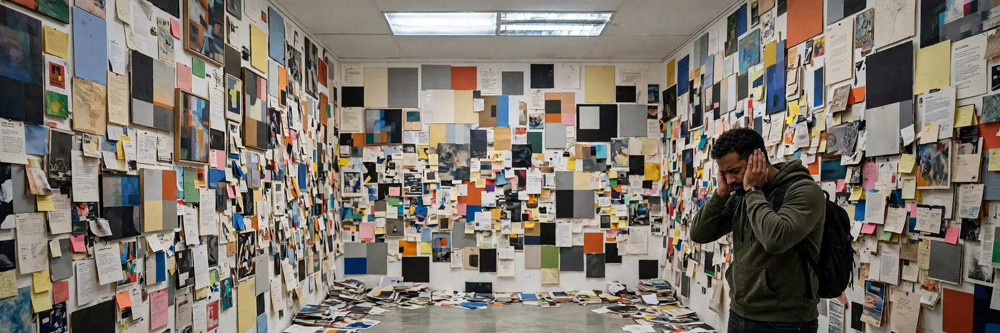
The problem
Sensory overload is this wing's subject and its method: light, sound, crowd, information, and time, stacked slowly the way a real day stacks them, until the visitor feels the accumulation in their own nervous system, not as a metaphor.
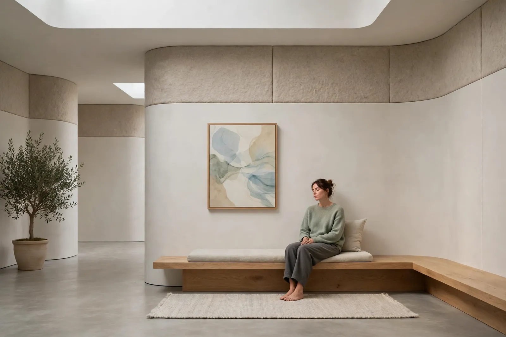
The solution
And the wing's safeguard is its solution, built in from the first sketch: consent at the threshold, intensity capped, and the Regulation Room always in reach, where every dial is handed back. Overwhelm is the lesson. Agency is the rule.
Try the mechanism
This panel is a safe, small model of the wing’s core mechanic. Turn the dials and watch the gallery change and the load rise. Nothing here flashes, nothing plays without your tap, and Calm resets everything instantly. The real wing works exactly like this, at architectural scale.
Settled
The gallery as designed: quiet, bright enough, room to think. This is the hub standard.
What helps here: nothing needs to change yet. Notice that. Calm is a design decision, not an accident.
Each dial is one input family from the eleven rooms. The load is the stack, not any single dial.
Brightness, glare, and flicker. Room 7.
Conversation and background noise together. Rooms 1 and 2.
People, animals, and items competing for the same space. Rooms 9 and 10.
Movement in the visual field that the eye keeps having to track.
Signs, notices, tasks, and demands on attention. Rooms 3, 5, and 6.
Before entering, every visitor sees the wing’s content note in plain language: what will rise, how high it can go, and how to stop it. Nobody is surprised into overload for the sake of the lesson.
Peak intensity is capped with neurodivergent reviewers, not by what the technology can do. The wing teaches the approach to overload and the way back down. It does not need to cause a shutdown to prove one is real.
The way back to the hub is visible from every sub room, works at every intensity, and is never treated as failing the experience. Leaving early is data the debrief respects, not a score it lowers.
A pristine fine art white cube gallery with Matthew Cicanese's nature photographs on white walls, polished pale floors, soft even light. Over five minutes the gallery slowly accumulates sensory load: conversations multiply, a fluorescent hum grows, light brightens and begins to flicker gently, notices and artworks crowd the walls, visitors fill the floor, until the room is overwhelming, then a calm doorway of soft light opens to a quiet regulation room with one bench and one photograph.
Wing 4 · Health · Concept stage
The same gallery, visited twice. Once on a good day, once on a bad one. The art does not change. The world does, and nobody else in the room can see why.
Concept visual: the Chronic Conditions wing. Same room, same art, two different bodies of weather inside the visitor.
Chronic conditions break the most basic assumption a workplace, a school, or a friend group makes: that yesterday’s capacity predicts today’s. This wing runs on a battery the visitor can watch. Every room costs energy, the prices change without warning, and rest restores less than it should. Nothing is dramatized. The numbers are simply honest, which is what makes the rooms land.
The second visit is the teaching. The visitor walks the identical route with a body having a bad day: the bench is farther, the text is longer, the stairs in the corner are suddenly the whole story. Then the wing asks the only question that matters: what did the room assume about you, and who pays when the assumption is wrong?
Following the Litmus Labs pattern, every wing breaks into sub rooms a visitor can click into. Select any room to open its page.
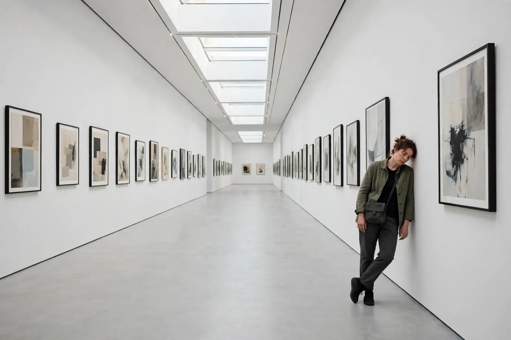
The problem
Chronic conditions fluctuate, and the built world prices that in nowhere. The same room that was easy on Tuesday is a wall to lean on by Friday, and because nobody else can see the difference, the visitor is charged with explaining it, every time.
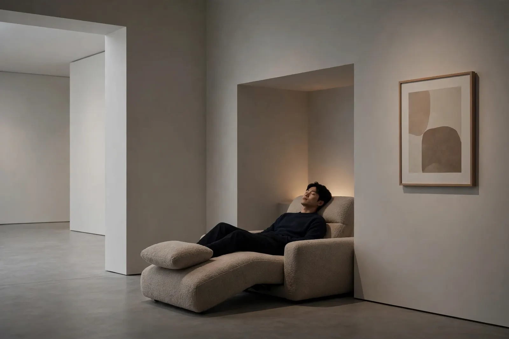
The solution
The wing's designed answer is unglamorous and total: seating, rest, pacing, and belief, built into the architecture. The condition does not change between the two images. The building's assumptions do.
Good day and bad day are not effort levels. They are different worlds, and planning has to survive both.
For leaders: the deadlines, meetings, and policies in their own house that quietly assume a body that never fluctuates.
What to say instead of the well meant things that land as doubt, drawn from the Explaining Loop room.
A calm white cube gallery with a soft glowing battery meter floating beside the visitor. Walk the same four rooms twice: first with the meter full, rooms bright and easy, then with the meter at a quarter, same art on the walls, but benches farther apart, wall text longer, light harsher, and every doorway a little heavier to open.
Wing 5 · Advising · Also inside Neurodiversity / Workload · Concept stage
The backrooms meets corporate. An endless cube farm where the fluorescence buzzes and flickers, and sensory inputs accumulate across a workday until overload is not a risk. It is the schedule.
Concept visual: Corporate Cube World. No windows, no edges, no quiet, and the lights never fully agree to stay on.
This wing has two doors, on purpose. From the hub, it is a standalone portal for leaders and teams: walk your own workplace, abstracted just enough to see it clearly. From inside the Neurodiversity wing, it is the sub gallery of the Workload Overload Room, because for many neurodivergent employees this is not a metaphor. It is Tuesday.
Nothing in Cube World is extreme. That is the point. The light buzzes a little. The notifications arrive a little often. The open plan murmurs a little constantly. Each input is defensible in a facilities meeting. Stacked across eight hours, they are the reason a talented person is empty by three and gone by spring. The wing runs a full workday in about twenty minutes, and lets the visitor watch their own capacity drain in step with the stack.
Tap inputs to add them to the workday, the way a real day adds them whether you tap or not. Watch what the accumulation does to the time on the clock.
9:00 am. Capacity full.
The day starts fine. It almost always starts fine. That is why nobody believes how it ends.
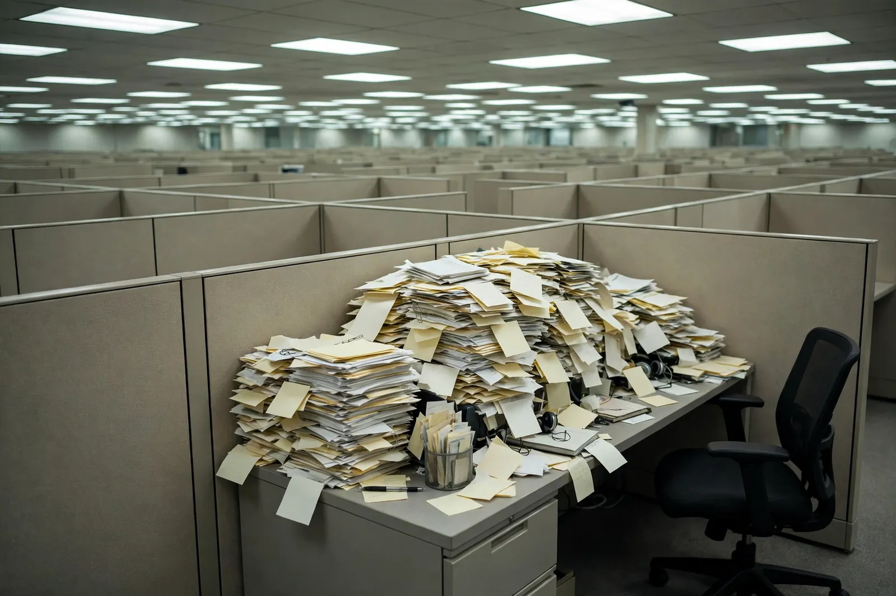
The problem
Corporate Cube World accumulates the way real offices do: fluorescence, open plan weather, a notification for every human impulse, each input small, the sum by mid afternoon a nervous system running a deficit it never agreed to.
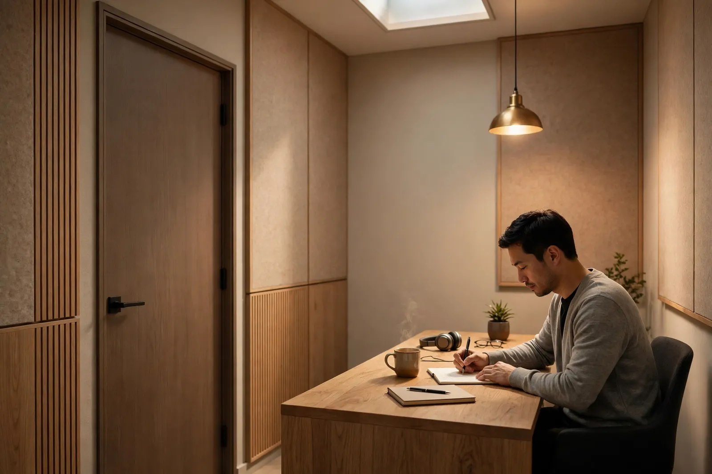
The solution
The solution this wing sells to leaders is a room and a rule: one genuinely quiet room, bookable and respected, and defaults that batch the noise. The business case and the body make the same argument.
The inputs they toggled become a printed stack card: the exact list to take into a facilities or culture conversation.
Overload at work is a scheduling outcome, not a personal failure. The day was built; it can be rebuilt.
Lighting, quiet space, or notification norms: one change, costed honestly, matched to Matthew’s training and advising work.
An endless corporate cubicle world like the backrooms: identical beige cubicles to a vanishing point, fluorescent ceiling panels buzzing, one flickering, monitors glowing, paper stacks growing, notification sounds stacking hour by hour, a wall clock running a full workday in twenty minutes, and one small quiet room with a soft chair glowing at the far end.
Sub room
Consent note at the threshold, intensity capped with lived experience reviewers, the Regulation Room or hub reachable at any moment, and a debrief that treats leaving early as information, never failure.
Every Litmus Labs room is built in more than one staging. The variations change the atmosphere, the time of day, the season, or the load. The teaching point never changes. Facilitators choose the staging at the threshold, and the visitor can switch or return to the base staging at any moment.
Litmus Labs · Sub room plate
Part of the Litmus Labs white cube hub. Every sub room follows the same pattern: one teaching point, named before any visuals; dials, not decorations; calm on demand.
Collection
Concept visual for this collection: the gallery rooms themselves, illustrated. Where a room carries Matthew’s own photography, that work hangs in reserved frames and is never replaced by a concept image.
Consent note at every threshold, intensity capped with lived experience reviewers, the Regulation Room or hub reachable at any moment, and a debrief that treats leaving early as information, never failure.
Select any room to open its own page: its concept visual, what is simulated, what it teaches, its portals, its variations, and its Genie-ready prompt.
Litmus Labs · Collection plate
Part of the Litmus Labs white cube hub. Every collection follows the same pattern: one teaching arc, rooms that isolate it, portals that follow meaning, calm on demand.
The system behind the worlds
Matthew directed this before any world details: no wing gets designed until the governing bodies exist. Litmus Labs runs on a pair. The SOP Council owns process: how a world is briefed, built, checked, and made safe. The Roundtable Council owns judgment: whether it teaches, whether it is true, and whether it deserves to exist. Neither ships a world alone.
Process and safety. Drawn from Matthew’s standing SOP library, seated for this system.
Judgment and taste. The Leadership Roundtable and the Design Roundtable, seated together for this system.
Pulled from Matthew’s current councils, matched to what virtual worlds actually demand: story, design, expert positioning, discoverability, and a business that can sustain slow, careful work.
Design
The design conscience of the lab, present twice: as a Leadership seat and as the source of the Six Chris Clones who run the Design Roundtable on every room.
Story and language
Names things so people remember them. Owns the plain language pass: if a threshold text cannot be understood on first hearing, it goes back.
The offer
Keeps the advising door honest: every wing that ends in training or consulting must earn it with teaching first, in the open, peer to peer.
Positioning
Scores the lab as an asset, not a hobby: oversubscribed thinking applied to a waitlist of venues, schools, and leadership teams.
Expert practice
The win without pitching seat. Guards the line between a teaching world and a sales funnel wearing gallery clothes.
Discoverability
Product led search thinking: how the right dean, facilities lead, or curator finds a wing at the moment they need it.
Cash flow, Seat 7
Sustainability math for slow builds: what each world costs to make and maintain, and what has to be true for the lab to keep going.
Leadership seat
Leadership Roundtable seat, Roster v3.0. Seated on the founding council for Litmus Labs.
Leadership seat
Leadership Roundtable seat, Roster v3.0. Seated on the founding council for Litmus Labs.
Leadership seat
Leadership Roundtable seat, Roster v3.0. Seated on the founding council for Litmus Labs.
Contrast veto
Of the Six Chris Clones. Holds the standing veto on contrast, legibility, and color separation in every room, including the ones designed to overwhelm. Overload is staged with light and load, never by making text unreadable for real.
The final seat
Founder and the only vote that outranks the councils. Lived experience, the camera, and the standard: fine art first, teaching always, spectacle last.
Founded for Litmus Labs
These are new, written for this goal, in the house pattern. Each is a working draft until Matthew ratifies it, and each names its owner and its gate.
Owner: SOP Council. Gate: no brief, no build.
Owner: Sensory Safety Review, with lived experience veto. Gate: no public session without a signed safety pass.
Owner: SOP Council. Gate: every wing decomposes the same way, so visitors learn the building once.
Owner: Roundtable Council, Sam Horn seat leading the public pass. Gate: both passes reviewed before a wing opens.
Owner: SOP Council, Disability wing. Gate: a situation enters the series only if the claim and the failure are both documented.
Owner: SOP Council, Disability wing, with fire safety review. Gate: safety content is checked against current code and guidance before it teaches.
A wing or sub room brief is written under LL-01 and LL-03.
Safety, access, verification, and build order. LL-02, LL-05, and LL-06 gates apply.
Teaching value, story, positioning, and the Perfection vs Inclusion Gate.
Prototype one room, walk it with reviewers, fix, then scale to the wing.
Roadmap
An honest map. Today, Litmus Labs is a founded system: the hub site, the wing briefs, the sub room pattern, draft prompts, and v0.1 councils and SOPs. No virtual world has been built yet, and this page will say so until one has.
Phase 0 · Now
Phase 1
Phase 2
Phase 3
Wing 6 · Innovation · Concept stage
Every wing of Litmus Labs is an exhibition, but this is the one built like a product showroom from a film: innovations presented as test chambers, each concept in its own room, demonstrated live instead of described.
Concept visual: the Innovation wing. Test chambers behind glass, until you step through.
Innovation usually gets a pitch deck. Here it gets a room, a working demonstration, and a visitor standing inside it. The wing collects the tools, methods, and devices growing out of Matthew’s practice, and exhibits them the way the great fictional labs exhibit theirs: behind glass until you step through, then all around you.
Two founding exhibits anchor the wing. Tactile Health explores touch as a health interface: surfaces, textures, and haptic feedback designed for bodies that read the world by hand. The CyberDeck is a portable working deck of tools for field science and documentation, and its room carries the wing’s signature portal: straight back to the Save Herbaria Room in Art, because the deck exists to read collections like the ones Herbaria fights to save.
A bright white cube showroom like a film set innovation lab: individual test chamber rooms behind glass, one room of textured tactile health surfaces glowing softly under fingertips, one room built around a rugged portable cyberdeck workstation with specimen trays, and a round portal of light in the wall opening onto a herbarium archive.
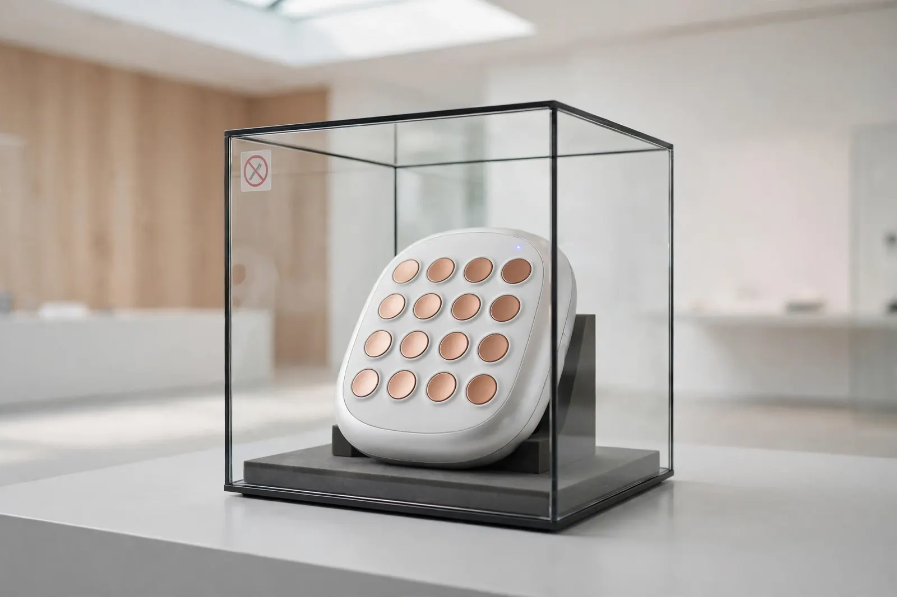
The starting state
Showrooms protect objects. But an innovation for bodies makes its claim in use, in a hand, at a height, under real conditions, and glass turns that claim into a rumor. The starting state of every chamber here is the rumor.
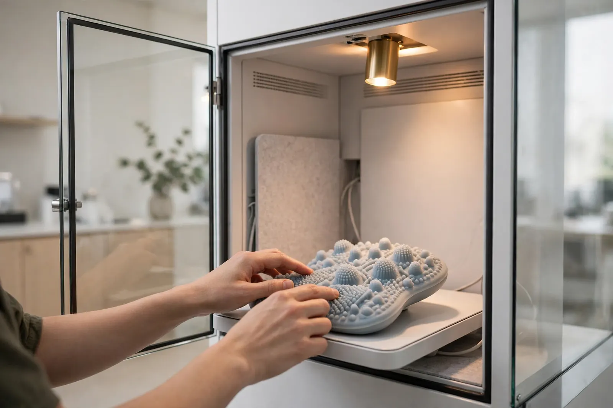
The designed state
The designed state is the demonstration: chambers you enter, prototypes you handle, inventors' claims tested live by the people they are for. That is why this wing's portal runs to the Herbaria: tools earn their meaning at the specimen, in the hand.
Wing 7 · Conservation · Concept stage
Disturbance is not the end of an ecosystem’s story. It is often the middle. Four rooms, connected wall to wall by portals, walk the connected story of fire, insects, and water.
Concept visual: the Conservation wing. Four landscapes, one ring, portals in every shared wall. Concept illustration of the gallery rooms; the field photography on their walls is Matthew’s own.
The Conservation wing teaches ecology as sequence. Fire ecology explains what fire is for. The Wildfire room shows fire at full force, honestly, without spectacle for its own sake. The Bark Beetle room walks a Rocky Mountain National Park forest where beetles, drought, and warming have rewritten the canopy, and asks what a forest is becoming, not only what it lost. The Red Tide room moves to Florida’s coast, where a microscopic bloom scales up into fish kills, closed beaches, and a community’s hard season.
The four rooms portal directly among themselves, wall to wall, because that is how the science connects: stand in the beetle forest and step through into the burn, stand in the burn and step through into the bloom. Matthew’s conservation photography carries the walls of every room.
A white cube gallery opening into four connected landscapes with portals in the walls between them: a bright fire ecology meadow of fresh green after a burn, a wildfire ridge under orange smoke light, a Rocky Mountain lodgepole forest turning rust red from bark beetles with new green growth below, and a Florida shoreline under a rust tinted tide, connected in a ring.
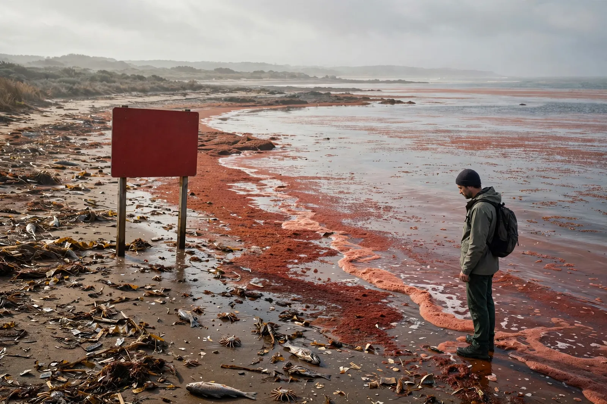
The problem
Conservation's teaching problem is time. A visitor shown one frame, the burn, the bloom, the kill, learns catastrophe. The ecosystems themselves run on longer clocks, and policy written from a single frame mismanages all of them.
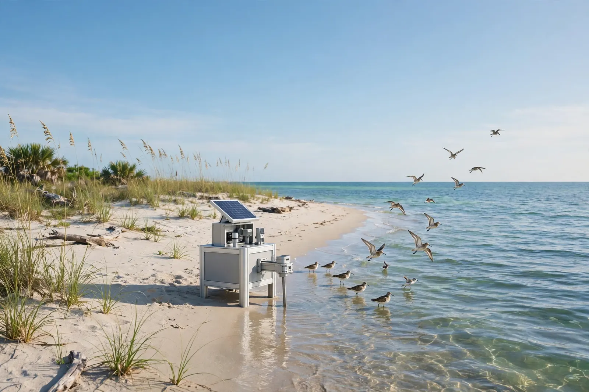
The solution
So every room in this wing runs time: dawn to night, season to season, disturbance to return. The solution image is not prettier. It is later, and later is where the science lives.
Wing 8 · Civic · Accessibility · Concept stage
This wing has two jobs, and it never separates them: voter accessibility and voter empowerment. Every room teaches what the barrier is, and what a voter can do, know, and ask for, in plain language. Not only what institutions should fix. What you can do, on the day, with the vote still yours.
Concept visual: the Accessible Voting wing. One vote, walked as one journey: getting there, getting in, casting it, and being heard after it.
A vote is not one moment at one machine. It is a chain: the bus that gets you there, the parking space that lets you out of the car, the drop box in the lot, the door, the check-in, the notices that tell you your rights, the machine that lets you mark a ballot in private. Break any link and the vote is at risk, and the break almost never announces itself. This wing walks the whole chain, one room per link, at the height and pace of the voters the chain most often fails.
Two rooms are grounded in Matthew’s own voter experience on Election Day, Tuesday, November 3, 2026, at Club Tico, 1599 City Park Drive in Fort Collins, a Larimer County Voter Service and Polling Center: the construction truck parked across all three accessible parking spaces, and the complaint procedure poster placed where a seated voter could not read it. Those rooms state exactly what his notes and photographs document, nothing more. The other rooms are teaching scenarios, labeled as such, built from barriers disabled and neurodivergent voters meet every election.
The last room leaves the polling place entirely. At the Capitol, the accessible entrance works, and the press is somewhere else. That room is built as a pitch space for the outreach Matthew has prepared on Capitol press access, because access is not only who can enter the building. Access is who gets heard once inside.
Every room stages the same scene twice: the bad example, the barrier as it actually happens, and the good example, the same scene done accessibly. The difference is named in one plain sentence on each side, so a visitor can say it back in the parking lot, at the check-in table, or in a county meeting.
Each room branches. A negligent actor: someone careless, not malicious, like a crew that parks where it should not. A threat actor: someone obstructive or intimidating on purpose, like a person blocking a drop box or pressuring voters at the accessible machine. A system failure: no villain at all, a locked accessible entrance, a machine down, a design that fails by itself. Every branch is labeled a teaching scenario. The documented Club Tico and Capitol rooms keep only what the record holds: negligence and system design, no invented threat actor.
Every branch ends the same way: what the voter can do in the moment, what they can ask for, who to tell, and how the scene should go instead, which is the good example staging. Knowing the fix is a right, not a favor, is the wing’s core lesson.
The wing’s one collection, The Vote, Start to Finish, holds all six rooms in journey order. Select any room to open its own page: its concept visual, its bad and good examples, its branches, and its empowerment path.
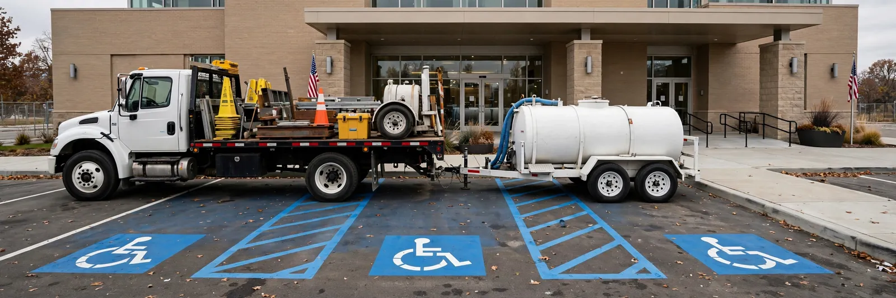
The problem
This wing's emblematic problem is documented, not invented: on Election Day, November 3, 2026, Matthew arrived at Club Tico to find a construction truck and trailer across all three accessible spaces and their aisles, and it was still there at 3:56 pm. It was gone when he left, because the crew's day had ended. Whether it would be moved on the Monday was, and stays, his open question for the county.
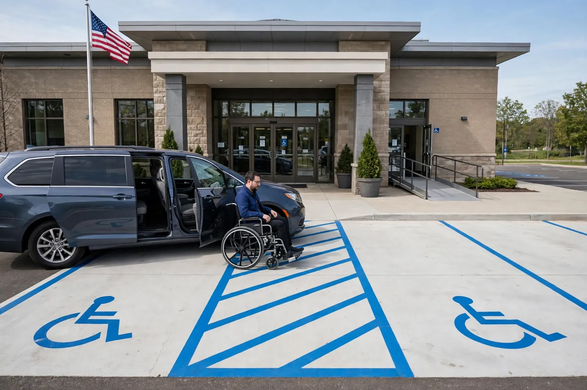
The solution
The solution is the same facade on an ordinary run: spaces clear, aisles open, a voter transferring and rolling in. The wing teaches both images because voters deserve to know what right looks like, and what to do, and who to tell, when the first image is the one they meet.
The pitch room
The Capitol Steps room doubles as the pitch space for Matthew’s Capitol press access outreach, prepared November 12, 2026 and not sent. The finding, from the documented record: congressional press coverage is an approved use at the base of the East Front steps, while the accessible member entrances sit underneath those steps at the carriage entrances, where Gallery press rules keep cameras back at a lamppost. A member who can take the steps walks down into the microphones. A member who must use the accessible entrance takes an elevator detour and arrives after the moment has passed. Congress’s own inspectors counted 567 barriers across the campus areas they inspected. The building has adapted before, after disabled members arrived: Representative Jim Langevin, Senator Tammy Duckworth. The ask is small and specific: a designated press stakeout point at the accessible entrances, on the record, the way the base of the steps is on the record now.
The room makes no claim the record does not hold. It does not claim any member has personally lost coverage or been excluded. It shows two routes out of one chamber, names the rule that separates them, and lets a visitor, a staffer, or a reporter stand in both. Open the room to walk the pitch.
Bus, parking, drop box, door, notices, machine, and the route to being heard. A voter who can name the chain can name the exact link that failed, which is what makes a report fixable.
Plain sentences for the moment: I need the accessible machine. I need this space cleared. I need that notice read to me, or moved where I can read it. Each room practices the sentence it teaches.
Start with the election judges and the supervisor on site. Keep going: the county elections office, and the formal HAVA complaint route to the Colorado Secretary of State, (303) 894-2200, the number printed on the poster in the Kiosk room. A report made calmly, with times and photographs, is evidence, not noise.
A white cube gallery wing that walks one vote end to end in six rooms: a bus stop with a ramped bus and a long last stretch of sidewalk; a voting place facade standing in the middle of the room with three marked accessible parking spaces and hatched access aisles in front of it and a white construction flatbed truck with a towed water trailer parked across all three; a ballot drop box in a parking lot at drive-up height; a calm polling hall with check-in and an accessible ballot-marking station with privacy; a notice wall shown twice, once as a tall vertical kiosk with notices stacked down to the floor and once as one horizontal band at seated eye level; and a capitol steps room with press microphones at the base of the steps and a second, equal stakeout point at the arched accessible entrances underneath. Every scene exists in a bad example and a good example staging. Sight and sound only, calm museum light, deep blue and amber accents.
Wing 9 · The Documented Record · Concept stage
The wing that holds Matthew’s documented record as rooms, walked proof-first, with credentials as information second: the exhibits, the speaking, the expeditions, and the hard rooms, held.
A resume lists. This wing walks. The solo exhibitions, the speaking and workshop record, the expeditions and assignments, and the recognition on Matthew’s record each take a room, hung from his own documented record and nothing else: Earth Up Close at Tampa International Airport, Symphonies in Scale: LICHENS at Fernbank Museum, Kansas Wesleyan University (a workshop room and an exhibition room, Symphonies in Scale: LICHENS), Exposure at Global Village Museum, and the Recognition Wall.
Inside this wing also stand the scenarios where Matthew was bullied, emotionally abused, and otherwise. Those rooms are held places, not filled rooms: Matthew has not supplied the scenarios yet, none are on record, and none will be invented for this wing. When he supplies them, each becomes its own room, told with the other people depersonalized and anonymized, no names, no identifying details.
No concept visual stands in for this wing, and no substitute imagery hangs in it. Its rooms hold Matthew’s real photographs, credited, or a reserved frame until the photographs are installed.
Room 1 · Exhibit room
Matthew’s solo exhibition Earth Up Close, Tampa International Airport, 2019. From his documented record, hung proof-first.
Room 2 · Exhibit room
His solo exhibition Symphonies in Scale: LICHENS, Fernbank Museum of Natural History, Atlanta, 2022. Fernbank, one word, as Matthew spells it.
Room 3 · Speaking and workshop room
Kansas Wesleyan University, 2023: DEI workshops on neurodiversity. Matthew places this on the record as a speaking and workshop room, not an exhibit.
Room 4 · Exhibit room
His solo exhibition Symphonies in Scale: LICHENS, Kansas Wesleyan University, 2023. From his documented record, hung proof-first. The 2023 workshop at the university has its own room, Room 3.
Room 5 · Exhibit room
Exposure, his exhibition at the Global Village Museum in Fort Collins, 2026, in the museum where he also holds a working relationship.
Room 6 · Record room
The recognition on his documented record: Forbes 30 Under 30, Art & Style (2021); PDN’s 30 New and Emerging Photographers to Watch (2018); Associate Fellow, iLCP (2018); the Conservation Biology cover (2024); a Smithsonian Magazine assignment (2020); and the Duke Nature Centennial Program, Duke × National Geographic (2024).
Room 7 · Held for the record
The speaking situations and expeditions from Matthew’s documented record take their rooms here as he supplies them, each hung from his own record and nothing else.
Room 8 · Held places
Held places for the scenarios where Matthew was bullied, emotionally abused, and otherwise. Empty on purpose, until he supplies them. See the held frame below.
Held places · Nothing invented
These rooms stand empty on purpose. Matthew has not supplied the scenarios yet, and none are on record, so nothing here is invented, dramatized, or filled in. When Matthew supplies a scenario, it becomes its own room, with the other people in it depersonalized and anonymized: no names, no identifying details.
The work hangs before the credentials do. Exhibits, rooms, and the record itself carry the argument; titles and honors arrive as information, second.
A life walked as rooms teaches what a list cannot: where the work happened, what it stood next to, and what it cost to make.
The empty rooms are part of the record too. What is not documented yet stays visibly, deliberately unfilled, until Matthew fills it himself.
A white cube gallery wing that walks one documented life as rooms, proof first: an airport exhibition hall carrying Earth Up Close at mural scale; a natural history gallery for Symphonies in Scale: LICHENS, lichen macro photographs floor to ceiling; a university workshop room set for teaching, chairs in a circle; a community museum gallery carrying Exposure; and a quiet recognition wall with honors set as wall text, not trophies. At the wing’s end, a row of empty white rooms with reserved frames and a single line of wall text each: held for scenarios their subject has not supplied yet, and will not be invented. Sight and sound only, calm museum light, the wing’s photographs are the subject’s own, credited, or the frames stay reserved.
Find Your Rooms · Wayfinding
Litmus Labs is a gallery of virtual experiences that teach about the world around us. It is bigger than one visit. This short set of questions reads what you brought with you today and hands you a route: six rooms, in the order to visit them, starting with the one that will meet you where you are. It cannot tell you who you are, and it does not try. It only finds your door.
You already have a route in this visit. Return to my results
For anyone arriving at Litmus Labs for the first time, and anyone coming back who only ever saw one wing. Leaders, teachers, and the simply curious all start here.
If you already know the room you want, skip this and take the Rooms menu. The route is for finding a start, not for slowing down a person who has one.
You arrive facing nine wings. You leave with a route of your own: your six rooms in visit order, a recommended first stop, and a copy of the route to keep. The result is a starting point, not a grade or a verdict. Discover the wing that pulls you, understand why it pulled you, and unlock the rooms built around it.
Your answers are read once, on this page, to build your route. Nothing is stored, sent, or saved anywhere, including in your browser. When you leave, the route leaves with you, unless you download your copy.
The wider shelf
The Overview, the nine wings, and Find Your Frictions at Fixing Friction for visitors whose route points at their own working life.
Find Your Rooms · Your route
The side door
The Regulation Room is open at any moment of this route. Leaving a room early is information, never failure. Open the Regulation Room
The wider shelf
Want the whole gallery instead? Go to the Overview or .
Download your results so you don’t have to take the quiz again.
Build Notes · The white paper library
This is the working library Matthew hands to Genie and the other world models. Every wing, collection, and room on this site has an entry here: its purpose, a detailed build prompt covering space, scale, light, color, materials, inhabitants, sound, movement, portals, the TLCCW lens, intensity where it applies, sensory safety and exit, and what the visitor should notice, feel, and learn, plus the alt text for its page image. Open any entry, copy the prompt, build the room.
How to use these notes
Each prompt is written to be pasted whole into a world model. Where a room has an intensity progression, the prompt states the ceiling and the calm return in the same breath, so the generated world inherits the safety design, not only the spectacle. TLCCW runs through every entry: Think, Learn, Communicate, Create, Work, the five things a visitor does inside a Litmus Labs room.
About Litmus Labs
Litmus Labs builds explorable virtual experiences that teach about the world around us: art, accessibility, disability, neurodiversity, chronic conditions, innovation, conservation, and accessible voting, exhibited as wings, collections, and rooms inside one white cube gallery, connected by portals that follow ideas rather than floor plans.
To teach what words alone cannot: what a world feels like from inside a body, a sense, or an ecosystem that is not your own, by building that world carefully enough to walk through, and safely enough to learn in.
A standing digital showroom where leaders, educators, clinicians, and the simply curious can step inside the experiences they make decisions about, until designing for every body and every sense is the ordinary way buildings, workplaces, and galleries get made.
Litmus Labs exists to close the gap between knowing and understanding. A checklist describes a barrier. A room makes you meet it. The lab turns Matthew Cicanese’s photography, accessibility practice, and teaching into places, so the lesson is carried in the body, not only in notes.
The pitch
World models can now generate explorable places from a paragraph. The technology arrived before the teaching did. Litmus Labs supplies the teaching: a governed library of worlds, each briefed to one clear lesson, each reviewed by the people who live it, each safe by design, and each written out in Build Notes detailed enough to hand directly to a model like Genie and build.
The format is the innovation. Wings hold themes. Collections hold stories. Rooms hold single ideas, exhibited like test chambers in the great fictional showrooms, and portals cut between rooms that belong together in meaning, wherever they sit. A visitor can walk the building linearly or travel by idea, from a cyberdeck to a herbarium, from a sanctuary into a cubicle farm, and feel the connection land in one step.
The audience is everyone a decision touches: executives and facilities leaders, educators and clinicians, museum and gallery teams, and the disabled, neurodivergent, and chronically ill people whose knowledge the worlds carry, seated as reviewers and co designers, never as subjects. The first build is already scoped: Sensory Overload, eleven rooms inside the Neurodiversity wing, with its councils seated and its safety system written before its first wall.
The team
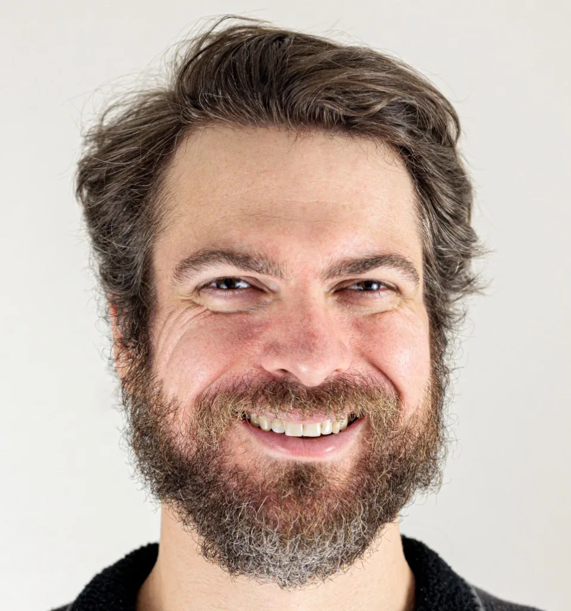
Founder and Principal
Matthew leads the practice: the audits, the speaking, the training, and the standard every deliverable is held to. A Certified ADA Coordinator, Deaf on his right and with low vision on his left, he has lived on the other side of the barriers this practice removes, and he brings the trained eye of a macro photographer to finding them.
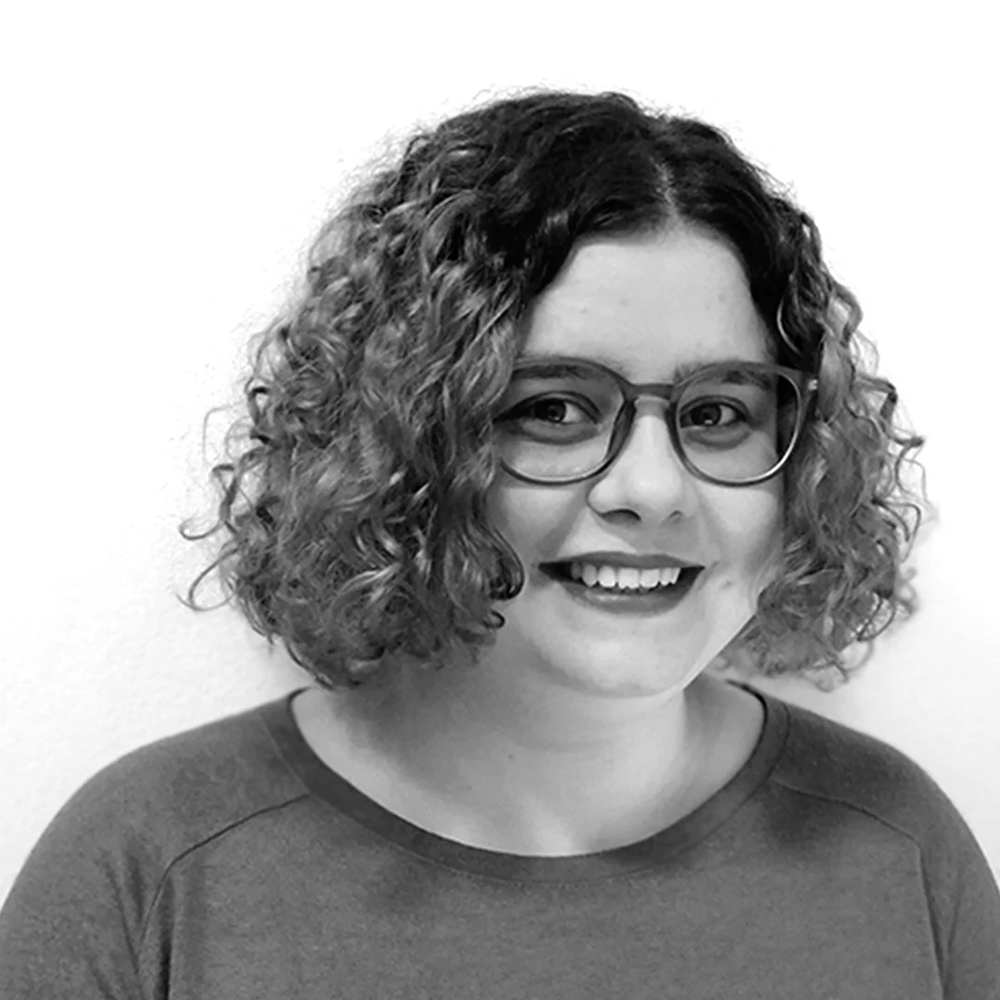
Chief Brand Officer
Ioana leads brand strategy at CultCat, the agency she co-founded, with more than 15 years of creative work for more than 300 companies on three continents. She directs the Fixing Friction brand and how this work presents itself to the world.
Chief Information Officer
Mircea leads UI and UX at CultCat, turning brand strategy into interfaces people can actually use. He oversees the systems and information behind Fixing Friction’s site and tools.
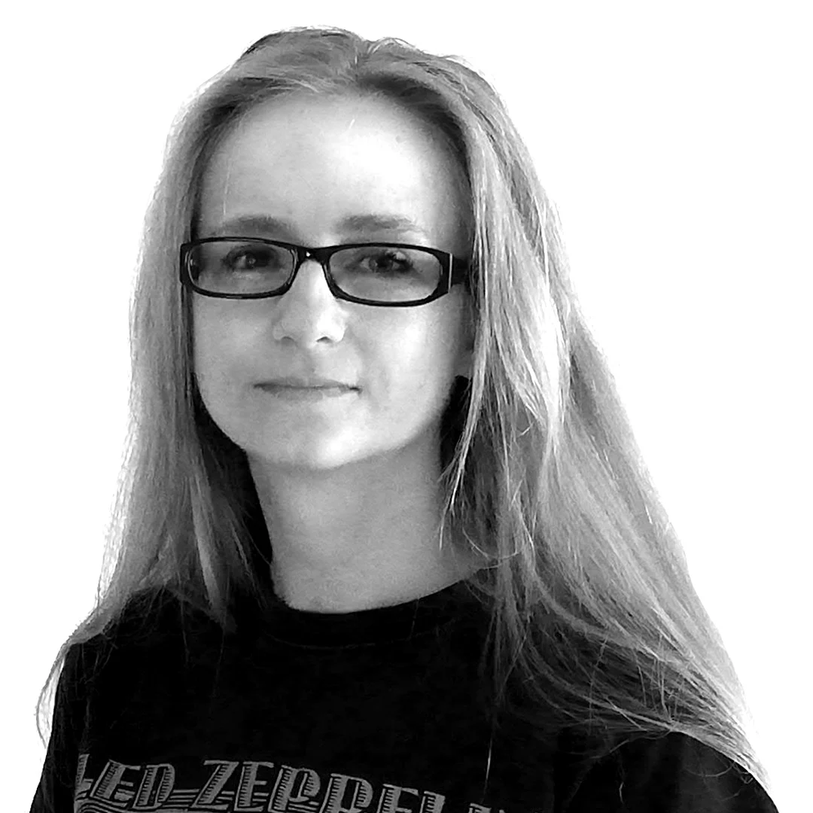
Chief Operations Officer
Alina leads brand identity at CultCat, designing the visual identities behind the agency’s client work. She keeps Fixing Friction’s operations and identity consistent across everything published.
Built with CultCat
The Fixing Friction brand and this site are built with CultCat, a branding agency founded in 2011 and rooted in a traditional Fine Arts education in Eastern Europe. Their strapline is ‘The power of purposeful branding’, and their client work includes Phillips 66, Music.com, and Bankless DAO. Three of their people hold roles on the Fixing Friction team.
Around the team sit the lab’s two councils, the SOP Council and the Roundtable Council, and the lived experience review panels each wing seats before it builds. See Councils & SOPs for the full roster.